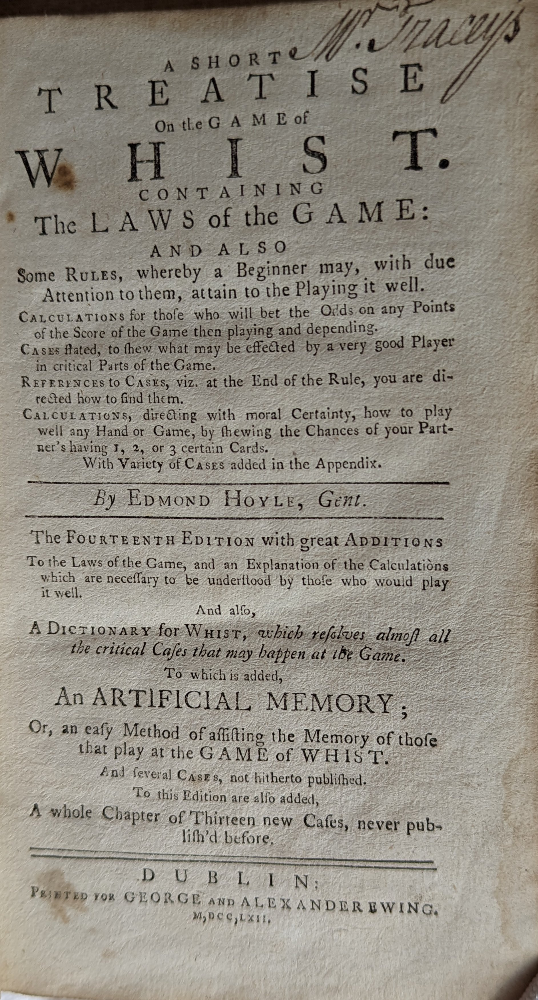

A Descriptive Bibliography of Edmond Hoyle
Copyright © 2014-26 by David Levy
(page updated 2026-01-31)User Guide
Whist.D.5
A Short Treatise on the Game of Whist, printed for George and Alexander Ewing, fifth Ewing edition, “fourteenth” edition, 1762.
 |
Title: | A SHORT | TREATISE | On the GAME of | WHIST. | CONTAINING | The LAWS of the GAME: | AND ALSO | Some Rules, whereby a Beginner may, with due | Attention to them, attain to the Playing it well. | Calculations for thoſe who will bet the Odds on any Points | of the Score of the Game then playing and depending. | Cases ſtated, to ſhew what may be effected by a very good Player | in critical Parts of the Game. | References to Cases, viz. at the End of the Rule, you are di-|rected how to find them. | Calculations, directing with moral Certainty, how to play | well any Hand or Game, by ſhewing the Chances of your Part-|ner’s having 1, 2, or 3 Certain Cards. | With variety of Cases added in the Appendix. | [rule] | By Edmond Hoyle, Gent. | [rule] | The Fourteenth Edition with great Additions | To the Laws of the Game, and an Explanation of the Calculations | which are neceſſary to be underſtood by thoſe who would play | it well. | And alſo, | A Dictionary for Whist, which reſolves almoſt all | the critical Caſes that may happen at the Game. | To which is added, | An ARTIFICIAL MEMORY; | Or, an eaſy Method of aſſiſting the Memory of thoſe | that play at the GAME of WHIST. | And ſeveral Cases, not hitherto publiſhed. | To the Edition are alſo added, | A whole Chapter of Thirteen new Caſes, never pub-|liſh'd before. | [double rule] | DUBLIN: | Printed for GEORGE and ALEXANDER EWING. | m,dcc,lxii. |
| Collation: | 12o: [A]2 B–E8/4 F4, 2A6 [$½ signed]; 36 leaves, pp. [4 ] [1] 2–56, 2[1–2] 3–12 |
| Contents: | Signature (Page) Reference | Contents | Signature (Page) Reference | Running Titles |
| A1r | title | |||
| A1v | blank | |||
| A2r–A2v | ‘[double rule] | THE | CONTENTS. | WHIST. | [...]’ | A2v | ‘The CONTENTS.’ | |
| B1r–F4v (1–56) | ‘[double rule] | A SHORT | TREATISE | On the GAME of | WHIST. | [...]’ | B1v–F4r (2–55) | ‘A ſhort Treatise on | the Game of Whist.’ | |
| 2A1r–A6v (21–12) | See Memory.D.3* (1762) | 2A1r–A6v (21–12) | See Memory.D.3* (1762) |
| Catchwords: | B5r(9) XVI. [XVII.]; C3v(22) III. [IV.] |
| Publisher: | George and Alexander Ewing |
| References: | ESTC T118624, Marshall s7 no.9 p143 (1890-02-22) |
| Copies Seen in Collections: | D [Dublin1761(21)] (see Ewing.D); L [1607/4733] (ECCO) (see Ewing.D); L [1607/527] (see Ewing.D); O [Jessel f.574] (see Ewing.D); NvLN [GV1241.H86 1761] (see Ewing.D); OCl [789.87H F61D] (see Ewing.D); TNJ [GV1241.H8P 1761] (see Ewing.D); Levy [1745] (see Ewing.D); Levy [1804] (see Ewing.D) |
| Other Copies in Collections: | C [Hib.7.761.25] (see Ewing.D); HAG [KW 364 G 168] (see Ewing.D); LU-S [GV1241.H86 1761] (see Ewing.D); NNStJ [GV1241.H86 1761] (see Ewing.D); NNU-F [GV1241.H6 1761] (see Ewing.D); NjP [42845.479.31] (see Ewing.D); RP [795 H868 1761 SpecColT] (see Ewing.D) |
| Notes: | It appears that Memory.D.3* was always publisted as a part of Whist.D.5. As with Whist.D.4, chapter XV has only the single line, “Contained in the Artificial Memory,” and the only chapter in Memory is numbered XV. Gatherings B and C are the same setting of type as Whist.D.4. Note that the two books have the same catchword anomolies, including those mentioned in the note to Whist.D.4. |